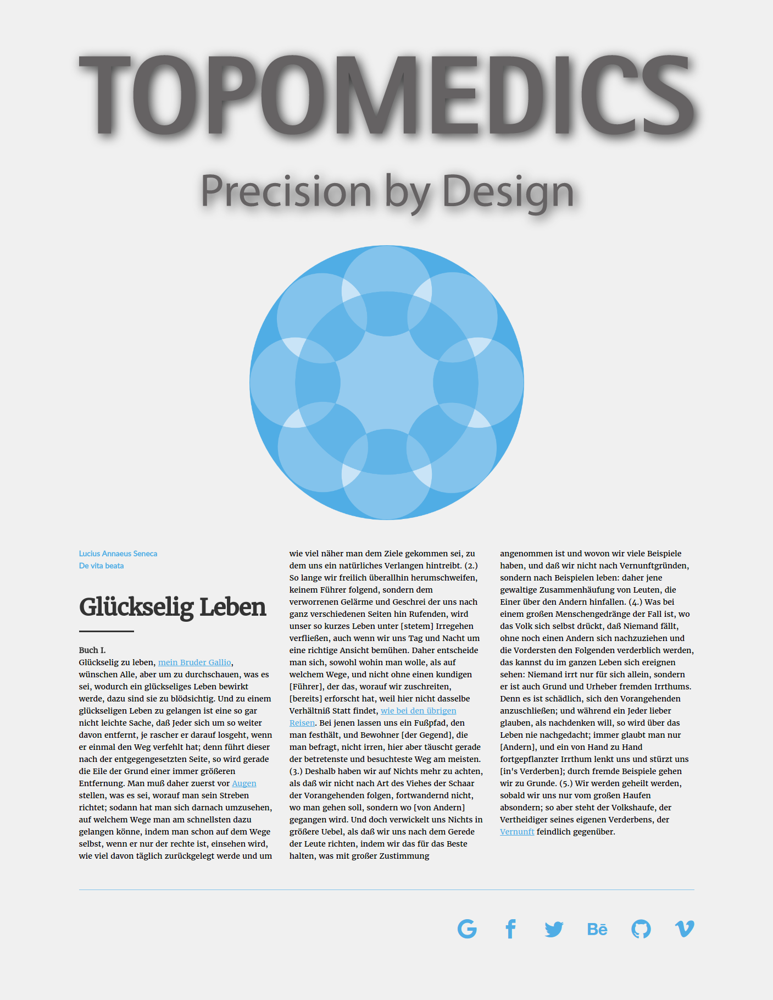

Übung 3
In dieser Übung handelt es sich darum, nach einer Grafikvorlage für die TopoMedics eine Webseite zu erstellen. Übung 4
In diesem Block erhielt ich nachfolgende Theorie.- Ein «flatdesign» ist ein minimalistisches Design.
- Ein «onepager» ist eine Webseite ohne mehreren Seiten. Der gesamte Inhalt ist auf einer Seite ersichtlich.
- Form follows function bedeutet, dass die Form durch die Funktion definiert wird.
- Mobile first, lautet ein Sprichwort. Es besagt, dass man zuerst an der mobilen Version arbei-ten sollte, damit man nicht reduzieren sondern ergänzen kann, da man dann den Platz ideal gespart hat.
- Es gibt vier Schritte, um eine Webseite responsive zu machen.
- Den Meta-tag gilt es einzubauen. Dieser lautet folgendermassen.
- Danach sollte man die Navigation anpassen. Man darf auch keine Tabelle verwenden, da Blindenprogramme dies nicht korrekt interpretiert.
- Anschliessend sollte man den stylesheet anpassen und «@media {}» implementieren.
- Schlussendlich gilt es noch die Bilder und Videos responsive zu machen. Beispielsweise mit diesem CSS-Code.
bild {max-width: 100%; height:auto;}Block 3
Block 4
meta name ="viewport" content="width=device-width, inital-scale=1"